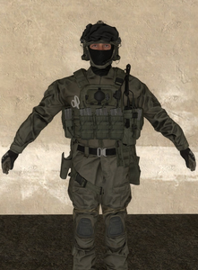
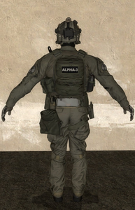
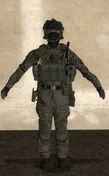
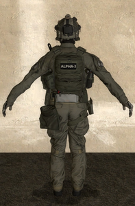
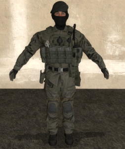
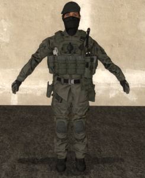
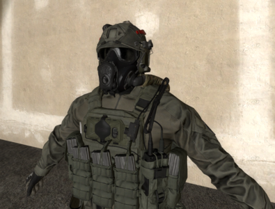
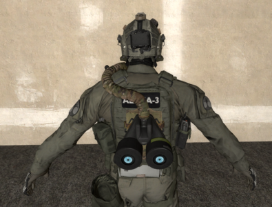

Tenues Standards
Tenues des BleusCette tenue est obligatoire pour tout opérateur en période de bleu. Elle contient :
Cette tenue recouvre complètement l'Opérateur afin de lui garantir l'anonymat, mais sert aussi à reconnaitre facilement les opérateurs en période probatoire. |



 < > |
Tenues des Opérateurs
| Les opérateurs de la FIM sont libres de s'habiller selon le modèle décrit ci-dessus, mais ils peuvent aussi changer leur tenue selon leur grè. Il y a cependant des restrictions sur les équipements et les couvre-chefs. Vous trouverez ci-dessous les restrictions sur les couvre-chefs. |
|
Les bérets peuvent être portés par uniquement les membres du Commandement. Tout autre couvre-chef peut être porté librement par tout opérateur ayant validé leur période probatoire |

 < > |
Tenues d'Opérations
Ces tenues seront OBLIGATOIREMENT portées par tous les opérateurs lors des opérations.
|
Ces tenues se présentent de la manière suivante :
|

 < > |
TEXTE ICI. LOREM ISPUM 3